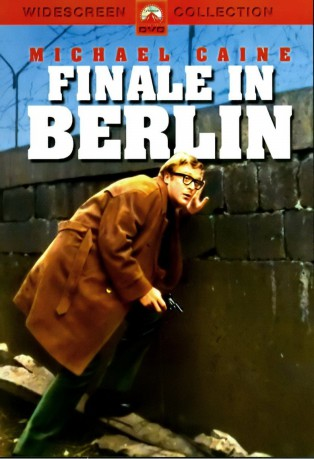
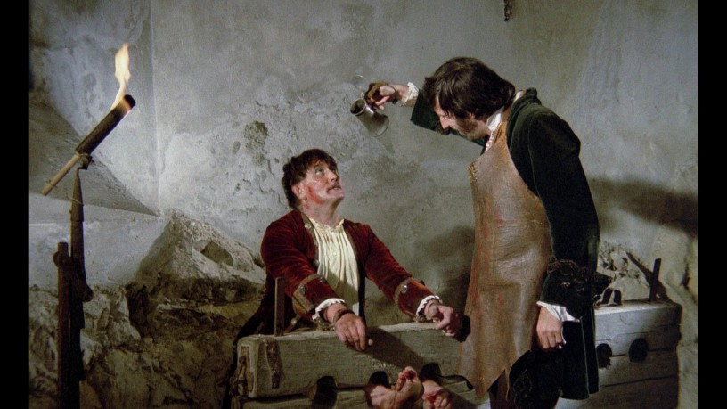

#6687 Finale in Berlin
Alternativ: Funeral in Berlin
 
 IMDB-Wertung: 6.9 / 10
IMDB-Wertung: 6.9 / 10  Metascore: 0
Metascore: 0 
Der britische Agent Harry Palmer erhält den Auftrag, in Ost-Berlin Sowjet-Oberst Stok zu kontaktieren, der angeblich überlaufen will. Obwohl er Zweifel an Stoks ideologischer Kehrtwende hegt, organisiert Palmer mit Hilfe seines deutschen Kontaktmannes Johnny Vulkan eine Flucht in den Westen. Erst als es fast zu spät ist, merkt er, daß ihn nicht nur Stok und Vulkan hinters Licht führen wollen: Auch Palmers aparte Zufallsbekanntschaft Samantha spielt mit verdeckten Karten...
Jahr: 1966
Dauer: 97 Minuten
FSK: 16
Land: England Studio: Paramount PicturesTonspuren:
Untertitel:
Auflösung: SD (720x304) Größe: 1484 MB
Genre: Thriller
Regisseur: Guy Hamilton
Drehbuch: Len Deighton
Soundtrack:
Darsteller:
 Michael Caine als Harry Palmer
Michael Caine als Harry Palmer- Paul Hubschmid als Johnny Vulkan
- Oskar Homolka als Col. Stok
- Eva Renzi als Samantha Steel
 Guy Doleman als Ross
Guy Doleman als Ross- Thomas Holtzmann als Reinhardt
 Günter Meisner als Kreutzman
Günter Meisner als Kreutzman-  Herbert Fux als Artur
- Rachel Gurney als Mrs. Ross
- John Abineri als Rukel
- Sarah Brackett als Babcock
- Freda Bamford als Alice , uncredited
 Marthe Keller als Brigit , uncredited
Marthe Keller als Brigit , uncredited Nikki Van der Zyl als Samantha Steel , uncredited
Nikki Van der Zyl als Samantha Steel , uncredited- Hugh Burden als Hallam
- Heinz Schubert als Aaron Levine
- Wolfgang Völz als Werner
- Rainer Brandt als Benjamin
- David Glover als Chico
- Charlotte Brummerhoff als Black Widow
- Ira Hagen als Monica
- Erhart Stettner als Old Man
 Pauline Chamberlain als Lady on London Bus , uncredited
Pauline Chamberlain als Lady on London Bus , uncredited- Ursula Heyer als Bar Girl , uncredited
- Edward Meeks als East-German Guard , uncredited
Datei: X:\3-Trilogie(G-M)\Harry Palmer\Finale in Berlin (1966, FSK16, 720x304).avi seit 07.08.2017
Festplatte: HD Collection-2(A-Z)-3(A-M)
 Alle Filme aus Gruppe '3-Trilogie(G-M)\Harry Palmer'
Alle Filme aus Gruppe '3-Trilogie(G-M)\Harry Palmer'